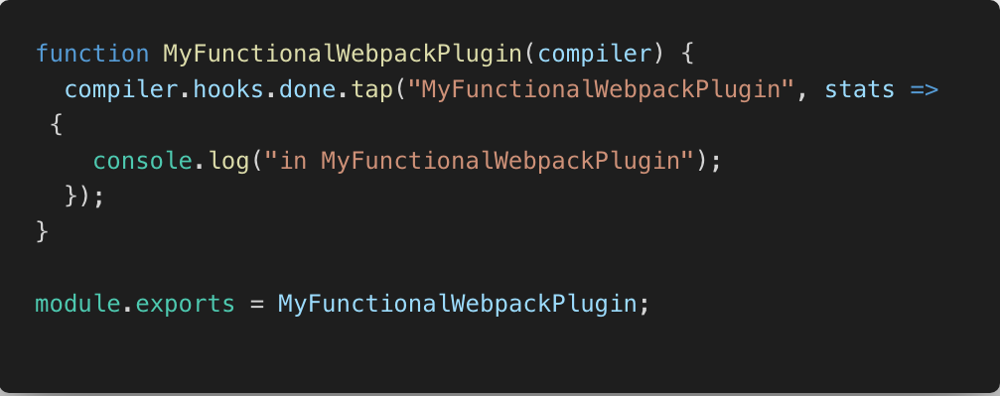
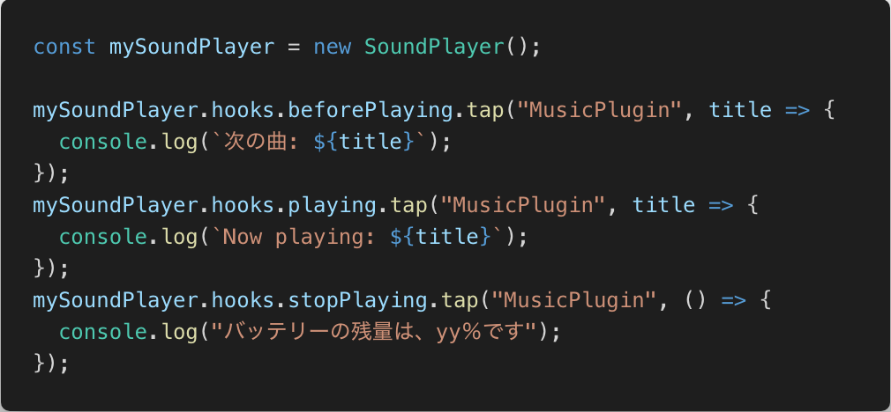
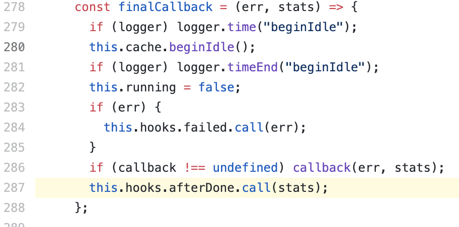

Pluginで理解するwebpack
@ 2019.11.06 Ginza.js#6 - connpass
About me

おしながき
- 発表のゴール
- webpackのプラグインとは
- まとめ
- 発表のゴール
- webpackのプラグインとは
- まとめ
webpackの処理を理解したい人が
webpackのプラグインシステムを理解できるようになる
話すこと
- webpackのプラグインとは
- Tapableについて
- 説明用のコードはこちら: yinm/study-webpack-plugins
話さないこと
- 既存の便利プラグインの紹介
- 発表のゴール
- webpackのプラグインとは
- まとめ
Plugins are the backbone of webpack. webpack itself is built on the same plugin system that you use in your webpack configuration!
Plugins | webpack
- webpack.config.jsで設定するプラグインと同じプラグインシステムで、
webpack本体もできている
➡️ プラグインシステムを理解することが、webpack本体の理解につながる！
プラグインのインターフェース(2種類)
apply()メソッドを持つオブジェクト- 引数にcompilerを取る関数
apply()メソッドを持つオブジェクトの場合
引数にcompilerを取る関数の場合
webpack.config.jsでの設定
プラグインの処理
- webpackで定義されたevent hooks発生時に実行したい処理を実装する
- event hooksは、Compiler Hooks | webpackなどに書かれている
- event hooksの実装に使われているコアライブラリとして、webpack/tapableがある
簡単な実装でTapableを確認する
event hooksを定義する
処理の中で、定義したevent hooksを呼び出す
Hookされたタイミングで実行したい処理を実装する
(webpackのプラグインで実装するのはこの部分)
webpack本体で、Tapableを使っていることを確認する
(画像のコードは、スライド作成時点のwebpack/lib/Compiler.jsからキャプチャ)
event hooksを定義する
処理の中で、定義したevent hooksを呼び出す
webpack本体で、Tapableを使っている箇所
- Compiler
- Compilation
- Resolver
- Module Factories
- Parser
- Template
ref: Everything is a plugin! Mastering webpack from the inside out - Sean Larkin - YouTube
プラグインでHookできる大体の場所がわかったので、
詳細を追っていけばwebpackの処理を理解できるようになりそう
(自分もまだ全然追えてないですが...！)
- 発表のゴール
- webpackのプラグインとは
- まとめ
- webpackのプラグインシステムは、webpack本体でも使用されている
- webpackのプラグインは、以下のどちらかのインターフェースを持っている
apply()メソッドを持つオブジェクト- compilerを引数に取る関数
- webpackのevent hooksの実装には、Tapableが使われている